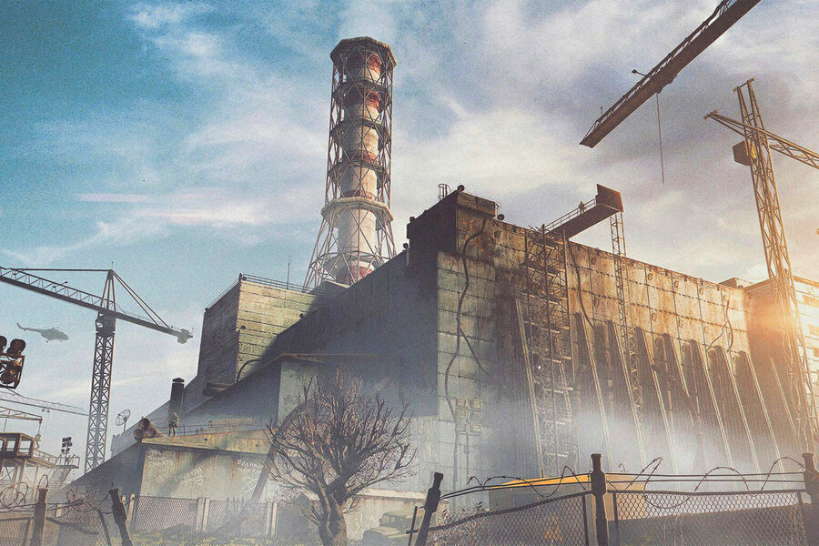
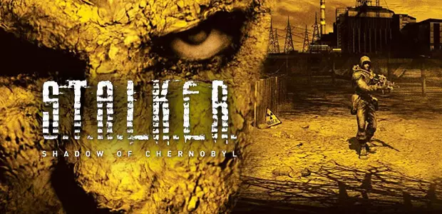

Чорно́бильська атомна електростанція, скорочено ЧАЕС — зупинена атомна електростанція в Україні, біля міста Прип'яті в Київській області, що діяла з 1977 по 2000 рік.
Будівництво станції розпочали у 1970 році, перший блок запустили у 1977 році. АЕС розташована на відстані 2 км від міста Прип'яті, збудованого паралельно зі станцією передусім для її працівників. Назва станції пов'язана з містом Чорнобилем, тодішнім районним центром цієї місцевості. Станом на початок 1986 року ЧАЕС була найпотужнішою атомною електростанцією європейської частини СРСР.
26 квітня 1986 року при проведенні проєктних випробувань сталася аварія, що повністю зруйнувала четвертий реактор станції і спричинила значне забруднення навколишньої території радіоактивними речовинами. Внаслідок цієї катастрофи повністю евакуювали населення Прип'яті, Чорнобиля та всіх інших населених пунктів у радіусі 30 км навколо станції, а сама аварія стала однією з найбільших техногенних катастроф в історії людства. Майже всі працівники померли через опромінення.
Чорнобильська АЕС розташована на відстані 18 км на північний захід від міста Чорнобиля, 16 км на південь від кордону з Білоруссю і близько 110 км на північ від Києва Але після катастрофи в 2007 році зявляєтся «S.T.A.L.K.E.R.

«S.T.A.L.K.E.R.: Тінь Чорнобиля» (англ. S.T.A.L.K.E.R.: Shadow of Chornobyl) — відеогра у жанрі шутера від першої особи з елементами survival horror та рольової гри, розроблена та випущена українською компанією GSC Game World для Microsoft Windows у 2007 році, для консолей у 2024 році. В Україні, та низці країн Східної Європи, видавцем виступила GSC World Publishing, в решті світу THQ, а в сервісах цифрової дистрибуції і на консолях GSC Game World. Дія гри відбувається в зоні відчуження Чорнобильської АЕС. Багато рівнів гри були створені на основі фотографій та документальних знімків, зроблених на реальній Чорнобильській АЕС і на околицях. Відповідно до сюжету гри, внаслідок нової катастрофи навколо електростанції з'явилися небезпечні «аномалії» та мутанти, а також чудові «артефакти». У Зоні діють «сталкери» - авантюристи, найманці та мисливці за артефактами, як одинаки, так і цілі збройні угруповання; головний герой гри Мічений — один із таких сталкерів, який втратив пам'ять і намагається на шляху до Зони з'ясувати, що з ним сталося.
«Тінь Чорнобиля», що спочатку носила назву Oblivion Lost (не плутати з S.T.A.L.K.E.R.: Oblivion Lost), задумана як науково-фантастичний проєкт на кшталт «Зоряна брама», створювалася як гра з відкритим світом; розробники мали намір помістити гравця в життя, що живе власним життям,- екосистему, в якій ігрові ситуації виникали б в результаті випадкової взаємодії різних складових. Гра була випущена після тривалого та утрудненого періоду розробки; багато амбітних, але важкоздійсненних задумів були згодом відкинуті. Будучи шутером від першої особи, гра також включає в себе елементи, більш характерні для комп'ютерних рольових ігор, в тому числі спілкування з неігровими персонажами, а також для жанру survival horror, нерідко намагаючись навіяти гравцю почуття страху та тривоги.

Гра отримала високі оцінки критиків: оглядачі особливо відзначали опрацьований світ гри та захоплюючий геймплей, хоч і вказували на велику кількість технічних проблем та нарікали на невиконані обіцянки розробників. «Тінь Чорнобиля» також виявилася комерційно успішною — по всьому світу було продано понад два мільйони копій гри. У 2008 році GSC Game World випустила в серії ігор S.T.A.L.K.E.R. гру-приквел S.T.A.L.K.E.R.: Чисте небо, а в 2009 - сиквел S.T.A.L.K.E.R.: Поклик Прип'яті; у розробці знаходиться гра S.T.A.L.K.E.R. 2. У низці країн Східної Європи гра та її продовження набули культового статусу з появою згуртованих груп шанувальників: було створено велику кількість книг, об'єднаних спільним вигаданим світом гри, та користувальницьких модифікацій; проводилися різного роду фестивальні заходи та рольові ігри. Популярність «Тіні Чорнобиля» також спонукала інтерес до реальної Чорнобильської АЕС та індустріального туризму.
Жанр гри виробником визначається як «Survival-FPS» з елементами рольової гри: мається на увазі, поряд з елементами звичайного шутера, наявність постійно ворожого до гравця навколишнього середовища, що, відповідно, повинно істотно ускладнювати умови виживання. Крім того, для досягнення фіналу гравець змушений виконувати різні завдання, хоча має певну свободу вибору.
Системні вимоги
Мінімальні Процесор: Intel Core i5-2500K 3.3GHz / AMD Phenom II X4 940 Відеокарта: Nvidia GeForce GTX 660 / AMD Radeon HD 7870 Оперативна пам'ять: 6GB ОС: 64-bit Windows 7, 64-bit Windows 8 (8.1) or 64-bit Windows 10 Місце
на жорсткому диску: 40 Гб
Рекомендовані Процесор: Intel Core i7 3770 3,4 GHz / AMD AMD FX-8350 4 GHz Відеокарта: Nvidia GeForce GTX 770 / AMD Radeon R9 290 Оперативна пам'ять: 8GB ОС: 64-bit Windows 7, 64-bit Windows 8 (8.1) or 64-bit Windows 10 Місце на жорсткому диску: 40 Гб[14]
.jpeg)